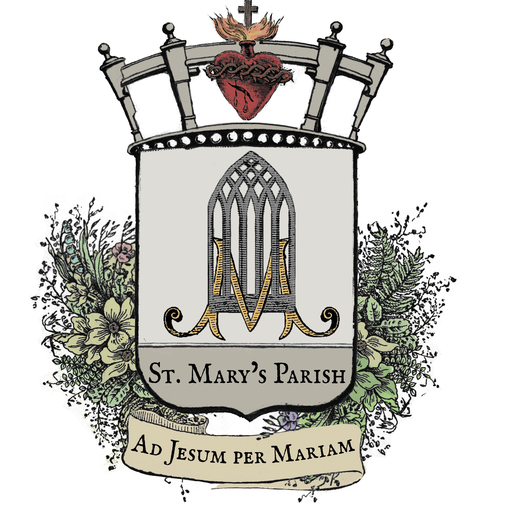

Diocese of Limerick · County Limerick, Ireland
Askeaton & Ballysteen
Parish
Ad Jesum per Mariam — To Jesus through Mary
Askeaton
9:00am Ballysteen
Askeaton
Askeaton
Fri–Sun 6:30–7:30pm
Liturgical Calendar
A Word of Welcome
Welcome to the parish of Askeaton and Ballysteen, a Catholic community along the banks of the River Deel in County Limerick. Whether you are a long-standing parishioner, newly arrived, or simply visiting, we are glad you are here.
Our parish is served by St. Mary's Church in Askeaton and St. Patrick's Church in Ballysteen, both within the Diocese of Limerick.
Parish Groups & Devotions
| Event | When | Time & Location |
|---|---|---|
| Alliance of the Two Hearts | 1st Friday of the month | 9:00pm |
| St. Joseph's Prayer Group | 1st Wednesday of the month | 8:00pm — Meeting Room |
| Healing Mass of Padre Pio | 2nd Friday of the month | 7:30pm |
| Youth Evening Monthly Holy Hour | 3rd Sunday of the month | 6:30 – 7:30pm |
| Family & Life Evening Monthly Mass | 4th Friday of the month | 7:30pm |
Celebrating the Sacraments
For Baptisms, Weddings, and Anniversaries, contact the office on Wednesdays 9am–5pm at 061–398 077. Anniversaries may also be booked in the Sacristy of the church where Mass is to be said.